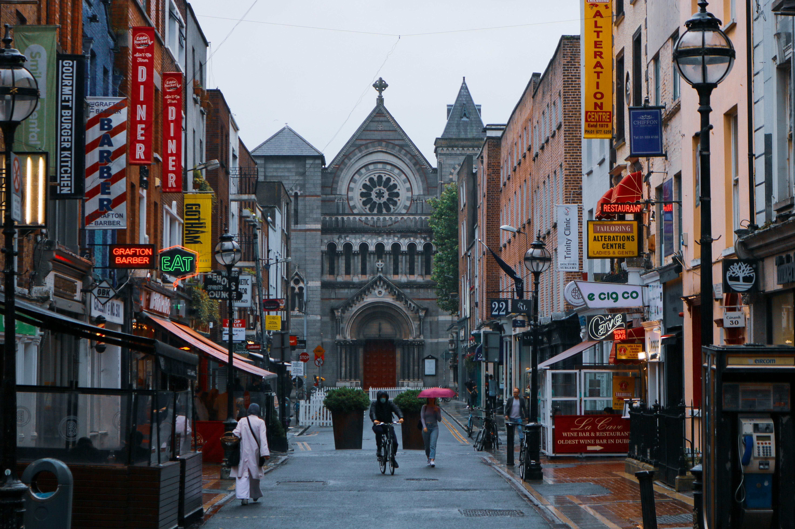
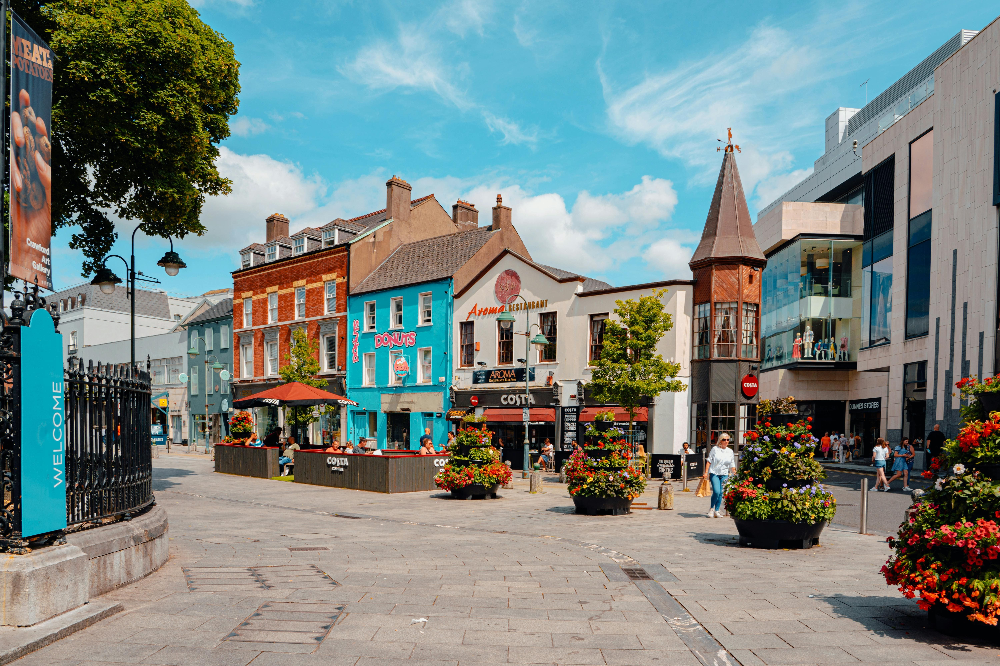
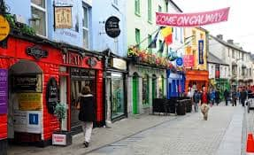
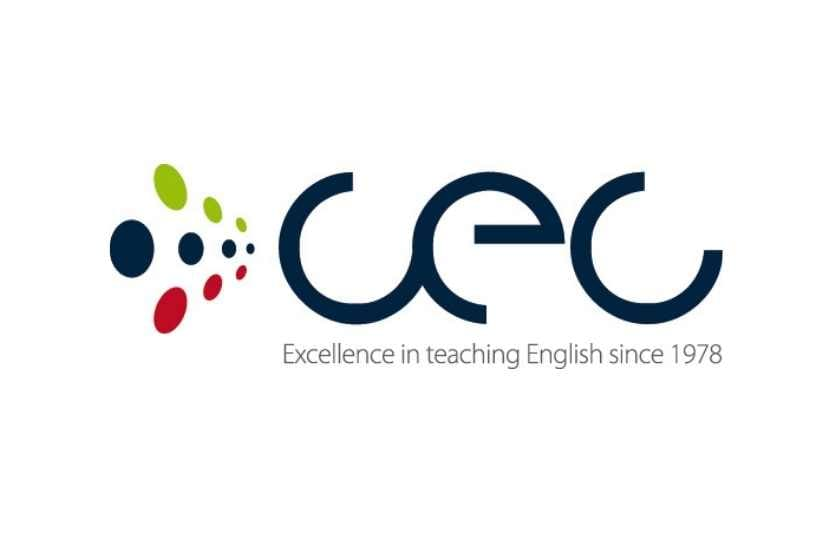

Come and study in Ireland, one of the best destinations for those who want to learn English, as well as enjoy its charming and unique cultural and educational environment.
Come and study in Ireland, one of the best destinations for those who want to learn English, as well as enjoy its charming and unique cultural and educational environment.

Dublín
The capital of Ireland and one of the most popular destinations for international students, as it is considered a modern and multicultural city.

Cork
A cultural city. If you're looking for something more relaxed, Cork is the perfect city, as it's considered a laid-back place to learn about and connect with Irish culture.

Galway
An ideal tourist destination for students who want to connect more with Irish culture, as Galway is famous for its artistic atmosphere, festivals, and cultural experiences.

Kaplan International Languages
Intensive English courses, academic courses and IELTS preparation for international students.
It offers programs ranging from 2 weeks to long-term courses, with approximate prices starting from €740.
It also offers online courses and specialized programs to improve fluency and communication in English.

Cork English College
School recognized for its general English programs, intensive courses and preparation for international exams such as IELTS and Cambridge.
It offers courses for adults and young people with programs from 1 week to 1 year, as well as accommodation options and virtual classes.
Registration and materials costs can start from €75.

Galway Cultural Institute
Language immersion programs with general English courses, IELTS preparation and classes for professionals.
Their methodology is based on a communicative and personalized approach, with small groups and cultural activities to improve fluency in English.
Courses from €75 to complete programs from €3,550.
In Ireland, you can enjoy a variety of cultural activities, including festivals, student events, and visits to important landmarks. But before you go, it's important to know what to do and what to avoid to better adapt to the culture of this wonderful country.
 Activities
Activities Events
Events Tourist places
Tourist places What you can and shouldn't do in Ireland
What you can and shouldn't do in IrelandMany exchange students who come to Ireland highlight the cultural and educational experience that this country offers during their studies.
Studying in Ireland was a very enriching experience, as its culture is present in all aspects of life. In addition to learning English, I learned a lot about Ireland, its customs, and its way of life.
I loved Dublin because I never felt like a foreigner. The Irish are so friendly, and meeting people from all over the world made the experience even better. Learning English there was one of the best experiences of my life, and I would definitely go back.
For more information, please email us at: info@studyinIreland.com